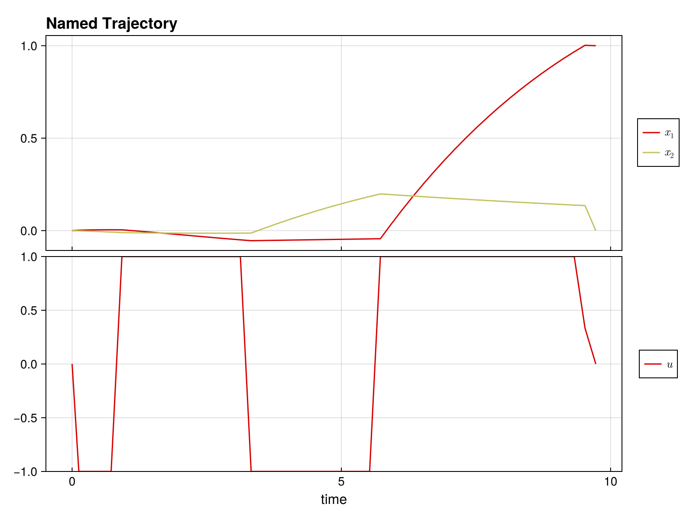

Quickstart Guide
Welcome to DirectTrajOpt.jl! This guide will get you up and running in minutes.
What is DirectTrajOpt?
DirectTrajOpt.jl solves trajectory optimization problems - finding optimal control sequences that drive a dynamical system from an initial state to a goal state while minimizing a cost function.
Installation
First, install the package:
using Pkg
Pkg.add("DirectTrajOpt")You'll also need NamedTrajectories.jl for defining trajectories:
using DirectTrajOpt
using NamedTrajectories
using LinearAlgebra
using CairoMakieA Minimal Example
Let's solve a simple problem: drive a 2D system from [0, 0] to [1, 0] with minimal control effort.
Step 1: Define the Trajectory
A trajectory contains your states, controls, and time information:
N = 50 # number of time steps
traj = NamedTrajectory(
(
x = randn(2, N), # 2D state
u = randn(1, N), # 1D control
Δt = fill(0.1, N), # time step
);
timestep = :Δt,
controls = :u,
initial = (x = [0.0, 0.0],),
final = (x = [1.0, 0.0],),
bounds = (Δt = (0.05, 0.2), u = 1.0),
)N = 50, (x = 1:2, u = 3:3, → Δt = 4:4)Step 2: Define the Dynamics
Specify how your system evolves. For bilinear dynamics ẋ = (G₀ + u₁G₁) x:
G_drift = [-0.1 1.0; -1.0 -0.1] # drift term
G_drives = [[0.0 1.0; 1.0 0.0]] # control term
G = u -> G_drift + sum(u .* G_drives)
integrator = BilinearIntegrator(G, :x, :u, traj)BilinearIntegrator: :x = exp(Δt G(:u)) :x (dim = 2)Step 3: Define the Objective
What do we want to minimize? Let's penalize control effort:
obj = QuadraticRegularizer(:u, traj, 1.0)QuadraticRegularizer on :u (R = [1.0], all)Step 4: Create and Solve
Combine everything into a problem and solve:
prob = DirectTrajOptProblem(traj, obj, integrator)DirectTrajOptProblem
Trajectory
Timesteps: 50
Duration: 4.9
Knot dim: 4
Variables: x (2), u (1), Δt (1)
Controls: u, Δt
Objective: QuadraticRegularizer on :u (R = [1.0], all)
Dynamics (1 integrators)
BilinearIntegrator: :x = exp(Δt G(:u)) :x (dim = 2)
Constraints (4 total: 2 equality, 2 bounds)
EqualityConstraint: "initial value of x"
EqualityConstraint: "final value of x"
BoundsConstraint: "bounds on Δt"
BoundsConstraint: "bounds on u"The problem summary shows the trajectory, objective, dynamics, and constraints:
probDirectTrajOptProblem
Trajectory
Timesteps: 50
Duration: 4.9
Knot dim: 4
Variables: x (2), u (1), Δt (1)
Controls: u, Δt
Objective: QuadraticRegularizer on :u (R = [1.0], all)
Dynamics (1 integrators)
BilinearIntegrator: :x = exp(Δt G(:u)) :x (dim = 2)
Constraints (4 total: 2 equality, 2 bounds)
EqualityConstraint: "initial value of x"
EqualityConstraint: "final value of x"
BoundsConstraint: "bounds on Δt"
BoundsConstraint: "bounds on u"solve!(prob; max_iter = 100, verbose = false)This is Ipopt version 3.14.19, running with linear solver MUMPS 5.8.2.
Number of nonzeros in equality constraint Jacobian...: 776
Number of nonzeros in inequality constraint Jacobian.: 0
Number of nonzeros in Lagrangian Hessian.............: 1254
Total number of variables............................: 196
variables with only lower bounds: 0
variables with lower and upper bounds: 100
variables with only upper bounds: 0
Total number of equality constraints.................: 98
Total number of inequality constraints...............: 0
inequality constraints with only lower bounds: 0
inequality constraints with lower and upper bounds: 0
inequality constraints with only upper bounds: 0
iter objective inf_pr inf_du lg(mu) ||d|| lg(rg) alpha_du alpha_pr ls
0 1.2897025e-01 3.97e+00 1.04e-01 0.0 0.00e+00 - 0.00e+00 0.00e+00 0
1 1.3820531e-01 1.45e+00 3.50e+00 -1.2 3.59e+00 - 9.16e-01 6.32e-01h 1
2 8.5434388e-02 1.33e+00 1.60e+00 -0.4 2.08e+01 - 8.60e-02 9.11e-02f 1
3 3.6409962e-02 8.73e-01 8.77e+81 -0.4 2.98e+00 - 3.56e-01 3.43e-01f 1
4 3.8524862e-02 8.73e-01 5.63e+03 -2.5 1.62e+80 - 5.29e-82 5.29e-82s297
5 3.6798210e-02 8.73e-01 5.63e+03 -0.8 6.15e+02 - 1.11e-03 2.57e-04f 3
6 2.8070416e-02 8.72e-01 1.52e+02 1.3 3.33e+02 - 1.32e-03 8.03e-04f 1
7 3.0435429e-02 8.68e-01 1.23e+02 1.4 1.12e+02 - 4.11e-02 4.94e-03f 1
8 7.1015155e-02 7.97e-01 1.36e+02 1.2 2.31e+01 - 5.91e-01 6.57e-02h 1
9 1.4171387e-01 3.69e-01 8.77e+81 1.1 1.71e+00 - 1.00e+00 5.20e-01h 1
iter objective inf_pr inf_du lg(mu) ||d|| lg(rg) alpha_du alpha_pr ls
10 1.5854667e-01 3.69e-01 8.77e+81 -0.8 1.33e+78 - 4.61e-80 1.57e-79h 1
11 1.5881734e-01 3.69e-01 3.56e+02 -0.8 1.84e+77 - 1.69e-80 1.69e-80s291
12 1.9355223e-01 2.98e-01 2.15e+02 1.0 3.49e+00 - 3.87e-01 1.93e-01f 1
13 2.4288885e-01 2.14e-01 2.00e+02 0.7 4.34e+00 - 6.97e-01 2.81e-01h 1
14 2.7696281e-01 1.57e-01 1.49e+02 0.2 2.52e+00 - 1.87e-01 2.65e-01h 1
15 3.7964238e-01 9.87e-02 1.32e+02 0.3 2.52e+00 - 3.71e-01 3.71e-01h 1
16 5.0844227e-01 5.79e-02 8.77e+81 0.9 7.13e-01 - 9.53e-01 4.02e-01h 1
17 5.1132567e-01 5.79e-02 8.77e+81 -1.0 1.14e+79 - 1.58e-80 2.33e-80h 2
18 5.1804642e-01 5.79e-02 5.43e+02 -1.0 1.81e+79 - 6.91e-81 6.91e-81s300
19 6.6039896e-01 3.52e-02 9.39e+02 0.7 7.83e-01 - 6.57e-01 3.73e-01h 1
iter objective inf_pr inf_du lg(mu) ||d|| lg(rg) alpha_du alpha_pr ls
20 7.5958413e-01 2.92e-02 1.19e+03 -0.9 3.00e+00 0.0 2.76e-01 1.65e-01h 1
21 7.9260822e-01 2.81e-02 2.82e+04 1.7 3.82e+00 - 8.67e-01 3.95e-02h 1
22 9.0987640e-01 2.37e-02 1.83e+05 1.8 1.24e+00 - 1.00e+00 1.58e-01h 1
23 9.3146047e-01 2.33e-02 8.77e+81 2.7 6.23e+00 - 1.18e-01 1.72e-02h 1
24 9.3357751e-01 2.33e-02 8.77e+81 0.2 5.60e+77 - 6.30e-79 1.59e-79h 2
25 9.3482526e-01 2.33e-02 5.52e+76 2.0 5.52e+76 - 5.71e-78 5.84e-79h 2
26 9.3522732e-01 2.33e-02 3.63e+68 2.0 3.63e+68 - 2.18e-71 1.34e-71h 4
27 9.3537893e-01 2.33e-02 2.77e+61 2.0 2.77e+61 - 8.38e-65 8.38e-65s253
28r 9.3537893e-01 2.33e-02 1.00e+03 2.0 0.00e+00 - 0.00e+00 0.00e+00R 1
29r 8.9867220e-01 1.85e-02 9.21e+00 0.4 3.99e-01 - 9.91e-01 8.87e-01f 1
iter objective inf_pr inf_du lg(mu) ||d|| lg(rg) alpha_du alpha_pr ls
30 8.9790230e-01 1.85e-02 1.69e+00 -2.1 4.42e+60 - 2.34e-62 2.34e-62s234
31 6.8335093e-01 1.87e-02 2.74e+02 1.7 4.89e+02 - 2.15e-05 6.23e-04f 1
32 7.0711669e-01 1.74e-02 2.67e+02 -0.7 2.90e-01 2.2 1.00e+00 7.04e-02h 1
33 7.3069819e-01 1.66e-02 2.53e+02 -1.0 6.80e+00 - 1.62e-01 4.79e-02h 1
34 7.5512610e-01 1.56e-02 2.39e+02 -4.0 1.97e+00 - 5.51e-02 5.97e-02h 1
35 8.0308594e-01 1.41e-02 8.77e+81 -0.2 5.40e-01 1.8 9.84e-01 9.80e-02h 1
36 8.0595197e-01 1.41e-02 8.77e+81 -2.0 1.14e+80 - 4.70e-81 1.69e-81h 1
37r 8.0595197e-01 1.41e-02 9.99e+02 -1.9 0.00e+00 - 0.00e+00 1.36e-169R295
38r 7.8967920e-01 8.21e-02 9.83e+02 1.4 3.24e+02 - 9.22e-01 5.97e-03f 1
39r 6.9285818e-01 6.56e-02 9.06e+02 1.1 9.97e+00 - 1.23e-01 6.69e-02f 1
iter objective inf_pr inf_du lg(mu) ||d|| lg(rg) alpha_du alpha_pr ls
40r 5.0658644e-01 5.59e-02 5.10e+02 1.1 9.45e-01 - 7.54e-01 1.73e-01f 1
41r 2.3500174e-01 4.37e-02 3.45e+02 1.1 9.70e-01 - 8.76e-01 3.50e-01f 1
42r 2.5326562e-01 1.27e-02 4.28e+01 0.4 2.51e-01 - 9.37e-01 8.77e-01f 1
43r 3.5349900e-01 6.78e-03 7.28e+01 -0.3 5.61e-01 - 6.60e-01 8.53e-01f 1
44 3.6260624e-01 1.47e-02 4.90e+02 -1.1 6.18e+80 - 2.93e-82 2.93e-82s304
45 3.5272118e-01 3.66e-02 4.70e+02 0.7 1.06e+01 - 4.72e-02 2.37e-02f 1
46 3.5649370e-01 4.13e-02 4.70e+02 0.6 1.58e+01 - 2.19e-01 1.10e-02f 2
47 3.5900827e-01 3.36e-02 3.76e+02 0.7 5.58e+00 - 6.07e-02 6.00e-02h 1
48 4.4221823e-01 2.53e-02 1.43e+04 0.7 2.61e+00 - 4.26e-01 2.43e-01h 1
49 4.3850417e-01 2.32e-02 8.77e+81 0.7 5.29e+01 1.3 1.40e-02 8.89e-03h 2
iter objective inf_pr inf_du lg(mu) ||d|| lg(rg) alpha_du alpha_pr ls
50 4.3846162e-01 2.33e-02 8.77e+81 0.7 2.25e+79 0.8 8.26e-81 6.86e-82h 5
51 4.3841784e-01 2.34e-02 2.65e+02 0.7 2.48e+79 0.3 8.01e-81 5.76e-82h 5
52 4.5592921e-01 2.23e-02 4.20e+02 0.7 1.04e+01 - 2.59e-01 4.36e-02h 1
53 5.5067564e-01 1.65e-02 3.31e+02 0.7 1.13e+00 1.7 4.06e-01 2.66e-01h 1
54 6.1284693e-01 1.40e-02 7.96e+02 1.0 5.27e-01 2.1 1.00e+00 1.40e-01h 1
55 6.2422138e-01 1.33e-02 8.77e+81 2.4 3.08e+01 1.6 2.32e-01 3.46e-02h 1
56 6.3019578e-01 3.56e-02 3.64e+03 -0.1 1.47e+78 - 2.18e-79 2.18e-79s304
57 7.2811718e-01 2.92e-02 1.90e+04 1.7 1.86e+00 - 5.82e-01 1.95e-01h 1
58 7.8728894e-01 2.65e-02 5.62e+04 1.0 5.90e+00 - 1.22e-01 8.93e-02h 1
59 8.0556986e-01 2.62e-02 5.63e+04 2.7 4.42e+01 2.0 1.05e-01 1.39e-02h 1
iter objective inf_pr inf_du lg(mu) ||d|| lg(rg) alpha_du alpha_pr ls
60 8.8509555e-01 2.30e-02 2.00e+05 2.0 1.33e+00 - 1.00e+00 1.18e-01h 1
61 9.3274671e-01 2.16e-02 1.80e+06 2.3 1.26e+00 - 1.00e+00 6.25e-02h 1
62 9.4330081e-01 2.13e-02 8.77e+81 2.1 6.27e-01 - 1.00e+00 1.40e-02h 1
63 9.4331782e-01 2.13e-02 1.23e+08 0.8 4.22e+71 - 1.69e-75 1.69e-75s296
64 9.4448933e-01 2.13e-02 6.79e+10 2.7 2.80e-01 - 1.00e+00 1.74e-03h 1
65 9.4454664e-01 2.13e-02 2.64e+14 2.7 1.14e+00 - 1.00e+00 2.55e-04h 1
66 9.4458532e-01 2.12e-02 3.31e+14 2.4 8.49e-01 - 1.00e+00 2.77e-03h 9
67 9.4461535e-01 2.11e-02 1.11e+16 2.7 1.04e+00 - 1.00e+00 3.69e-03h 4
68 9.4460616e-01 2.11e-02 9.44e+17 2.7 1.10e+00 - 5.86e-01 8.57e-04h 4
69 9.4460603e-01 2.11e-02 8.04e+15 2.7 3.88e-05 15.9 9.91e-01 1.00e+00h 1
iter objective inf_pr inf_du lg(mu) ||d|| lg(rg) alpha_du alpha_pr ls
70 9.4460647e-01 2.11e-02 3.65e+20 2.7 1.48e-01 - 1.00e+00 2.56e-05h 1
71 9.4461354e-01 2.11e-02 8.77e+81 2.7 1.03e+00 - 9.90e-01 9.77e-04h 11
72 9.4461354e-01 2.11e-02 8.77e+81 2.6 9.24e+54 - 4.27e-56 2.86e-72h 25
73 9.4461354e-01 2.11e-02 8.77e+81 2.7 5.33e+49 16.3 5.94e-51 3.99e-67h 25
74 9.4461354e-01 2.11e-02 6.34e+22 2.7 1.00e+50 - 3.60e-60 3.60e-60s276
75 9.4460998e-01 2.08e-02 6.34e+20 2.7 1.90e-04 15.8 9.90e-01 0.00e+00S276
76 9.4460796e-01 2.07e-02 6.34e+18 2.7 1.05e-04 16.2 9.90e-01 1.00e+00h 1
77 9.4440684e-01 1.32e-02 6.25e+16 1.2 1.08e-02 15.8 9.90e-01 9.85e-01h 1
78r 9.4440684e-01 1.32e-02 9.89e+02 2.7 0.00e+00 - 0.00e+00 3.06e-07R 16
79r 9.0393009e-01 5.74e-03 9.39e+00 0.5 5.43e-01 - 9.91e-01 9.91e-01f 1
iter objective inf_pr inf_du lg(mu) ||d|| lg(rg) alpha_du alpha_pr ls
80 9.2050856e-01 5.52e-03 8.77e+81 -1.5 2.76e-01 - 7.04e-01 3.94e-02h 1
81 9.2078129e-01 5.52e-03 2.38e+01 -2.6 3.89e+79 - 3.38e-82 3.38e-82s300
82 9.4072377e-01 5.34e-03 7.70e+02 -0.9 1.70e-01 - 1.00e+00 3.39e-02h 1
83 9.4293716e-01 5.32e-03 2.28e+05 -0.4 1.74e+00 - 1.00e+00 3.25e-03h 1
84 9.4310550e-01 5.32e-03 8.18e+08 1.1 5.79e-01 - 1.00e+00 2.76e-04h 1
85r 9.4310550e-01 5.32e-03 9.93e+02 0.2 0.00e+00 - 0.00e+00 2.57e-07R 21
86r 9.2340772e-01 1.71e-03 8.31e+00 0.5 6.99e-02 - 9.92e-01 5.08e-01f 1
87 9.2010512e-01 1.71e-03 1.50e+02 0.9 4.04e+01 - 1.88e-02 2.55e-04h 1
88 9.2068543e-01 1.71e-03 8.77e+81 1.3 7.35e+00 - 8.89e-01 4.76e-04f 1
89 9.2086615e-01 1.71e-03 1.72e+04 -0.6 7.38e+76 - 1.52e-79 1.52e-79s300
iter objective inf_pr inf_du lg(mu) ||d|| lg(rg) alpha_du alpha_pr ls
90 9.4189665e-01 1.65e-03 4.78e+05 1.1 1.77e-01 - 1.00e+00 3.51e-02h 1
91 9.4256003e-01 1.65e-03 5.18e+08 1.4 8.41e-01 - 1.00e+00 9.16e-04h 1
92 9.4218109e-01 2.87e-03 5.07e+06 2.7 2.55e-02 - 9.90e-01 1.00e+00f 1
93 9.4221325e-01 2.87e-03 4.93e+10 2.7 1.05e+00 - 4.90e-01 5.28e-05h 1
94 9.4220361e-01 2.15e-03 4.88e+08 2.7 2.10e-03 - 9.90e-01 1.00e+00f 1
95 9.4222501e-01 2.15e-03 8.77e+81 2.0 1.01e+00 - 2.35e-01 1.91e-05H 1
96 9.4222501e-01 2.15e-03 8.77e+81 2.0 9.49e+63 15.3 1.56e-65 3.19e-71h 1
97 9.4222501e-01 2.15e-03 8.77e+81 2.0 1.17e+58 - 6.36e-59 3.60e-75h 33
98 9.4222501e-01 2.15e-03 6.99e+20 2.0 1.24e+54 14.8 3.96e-62 3.96e-62s282
99 9.4222501e-01 2.15e-03 6.99e+18 2.0 4.04e-09 14.3 9.90e-01 9.90e-01s282
iter objective inf_pr inf_du lg(mu) ||d|| lg(rg) alpha_du alpha_pr ls
100 9.4222494e-01 2.15e-03 6.99e+16 2.0 3.67e-07 13.9 9.90e-01 9.90e-01s282
Number of Iterations....: 100
(scaled) (unscaled)
Objective...............: 9.4222494217659036e-01 9.4222494217659036e-01
Dual infeasibility......: 6.9875518070692328e+16 6.9875518070692328e+16
Constraint violation....: 2.1473427438832757e-03 2.1473427438832757e-03
Variable bound violation: 9.9693848176762856e-09 9.9693848176762856e-09
Complementarity.........: 9.9749402545450717e+07 9.9749402545450717e+07
Overall NLP error.......: 2.9484246752894152e+04 6.9875518070692328e+16
Number of objective function evaluations = 4011
Number of objective gradient evaluations = 96
Number of equality constraint evaluations = 4011
Number of inequality constraint evaluations = 0
Number of equality constraint Jacobian evaluations = 105
Number of inequality constraint Jacobian evaluations = 0
Number of Lagrangian Hessian evaluations = 100
Total seconds in IPOPT = 9.650
EXIT: Maximum Number of Iterations Exceeded.Step 5: Access the Solution
Let's look at the results.
plot(prob.trajectory)
The optimized trajectory is stored in prob.trajectory:
println("Final state: ", prob.trajectory.x[:, end])
println("Control norm: ", norm(prob.trajectory.u))Final state: [1.0, 0.0]
Control norm: 6.86376659331124What You Can Do
- Multiple objectives: Combine regularization, minimum time, terminal costs
- Flexible dynamics: Linear, bilinear, time-dependent systems
- Add constraints: Bounds, path constraints, custom nonlinear constraints
- Smooth controls: Penalize derivatives for smooth, implementable controls
- Free time: Optimize trajectory duration
This page was generated using Literate.jl.